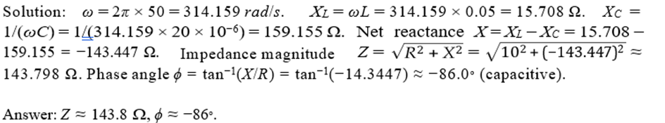
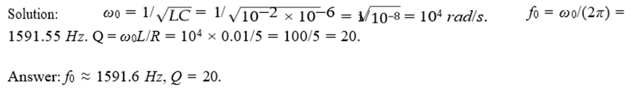

Answer:
Quality factor Q = fres / Bandwidth.
Quality factor is directly proportional to resonant frequency. So, if resonant frequency increases, quality factor increases.
Answer:
Under resonance, current is in phase with voltage, so the phase angle Φ = 0° → cosΦ = 1.
Therefore, power factor = 1 (unity).
Answer:
Answer:
Answer:
Real Power: P = VI cosθ = 230 × 5 × cos36.87° ≈ 920 W
Reactive Power: Q = VI sinθ = 230 × 5 × sin36.87° ≈ 690 VAR
Apparent Power: S = VI = 230 × 5 = 1150 VA
Answer:
Angular frequency: ω = 2πf = 314.16 rad/s
Inductive reactance: XL = ωL = 6.283 Ω
Impedance magnitude: Z = √(R² + XL²) ≈ 8.03 Ω
Current: I = V / Z = 230 / 8.03 ≈ 28.64 A
Real power: P = I²R ≈ 28.64² × 5 ≈ 4102 W
Answer:
ω = 2πf = 314.16 rad/s
XL = ωL = 31.42 Ω, XC = 1/(ωC) ≈ 63.66 Ω
Net reactance: Xnet = XL − XC ≈ −32.25 Ω
Impedance: Z = √(R² + Xnet²) ≈ 37.94 Ω
Circuit current: I = V / Z ≈ 5.27 A
Answer:
Answer:
The actual power consumed in an AC circuit. P = VI cosθ
Answer:
Power consumed by pure reactance in an AC circuit. Q = VI sinθ, unit: VAR
Answer:
Apparent Power: S = Vrms × Irms (in VA)
Power Factor: cos φ = cos(phase angle between voltage and current)
Lagging for inductive load, leading for capacitive load.
Answer:
Phasor: A vector representing a sinusoidal waveform with magnitude and phase.
Phase angle: Angular measurement specifying position of AC quantity relative to reference.
Answer: